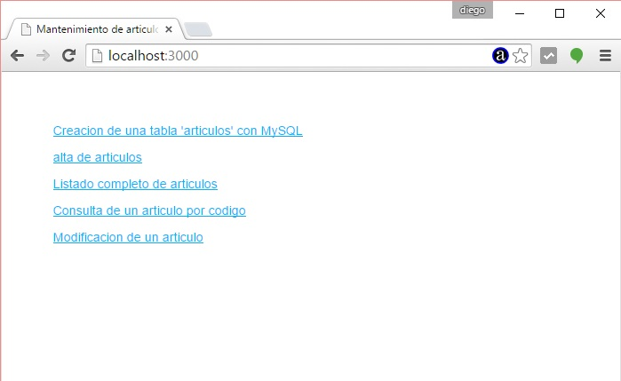
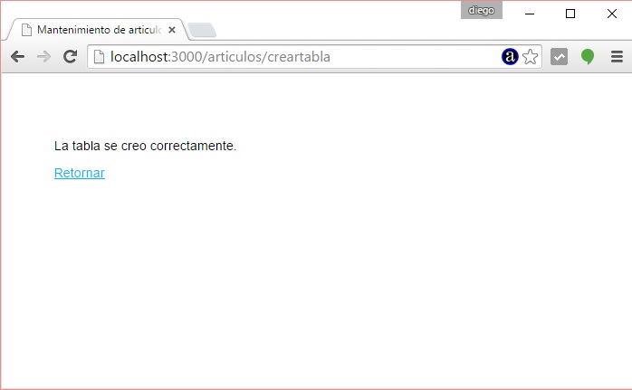
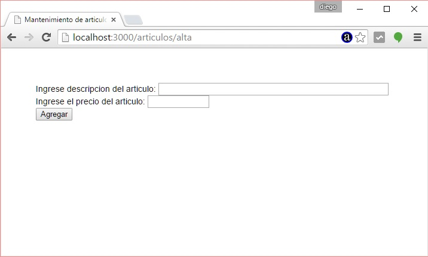
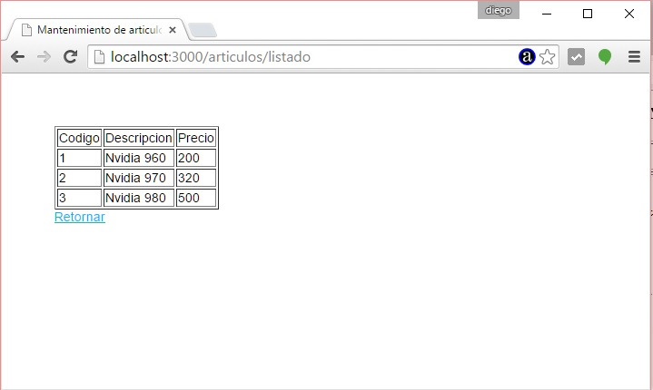
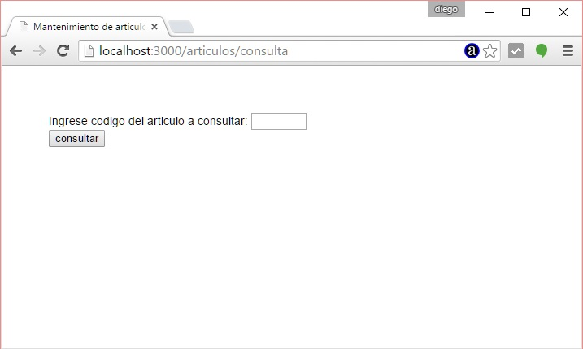
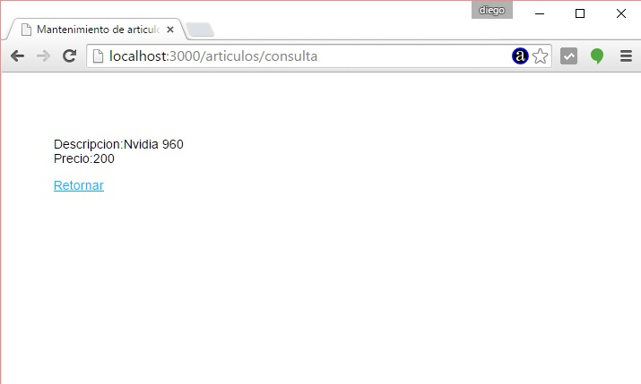
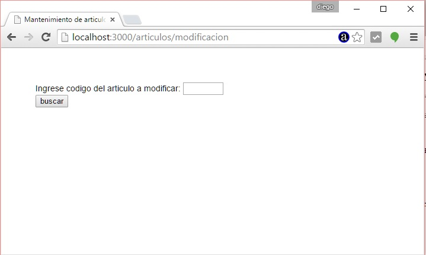
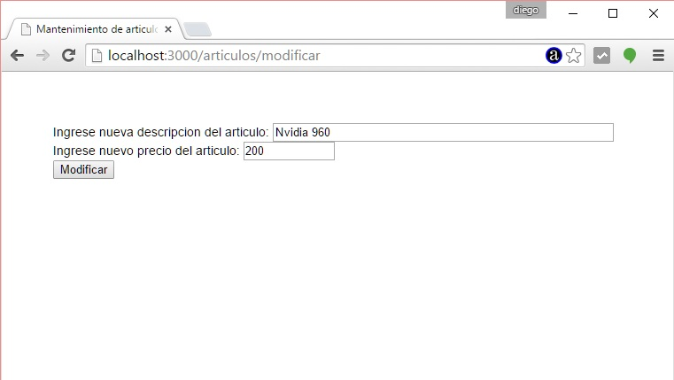

Problema
Implementar un ABM y listado de una tabla MySQL utilizando el framework Express como base para la aplicación web.
Ya vimos en un concepto anterior la instalación del MySQL y la creación de la base de datos aquí.
Paso 1
En conceptos anteriores ya instalamos el 'express-generator' por lo que nos posicionamos en el directorio 'c:\ejerciciosnodejs' (o el directorio donde esta almacenando todos sus proyectos) y procederemos a crear nuestra aplicación Node.js utilizando Express y su generador de código:c:\ejerciciosnodejs> express ejercicio23 --hbs
Estamos llamando al programa 'express' y le pasamos dos parámetros, el primero indica el nombre de nuestro proyecto y el segundo el sistema de plantillas que utilizaremos para generar nuestras páginas dinámicas (handlebars)
Ya tenemos creado la carpeta ejercicio23 y dentro de esta los archivos y subcarpetas básicos:
ejercicio23
app.js
package.json
bin
www
public
images
javascripts
stylesheets
router
index.js
users.js
views
error.hbs
index.hbs
layout.hbs
Instalamos todas las dependencias de módulos:
c:\ejerciciosnodejs\ejercicio23>npm install
Cuando llamamos a 'npm install' sin ningún otro parámetro lo que hace es buscar el archivo 'package.json' y proceder a instalar todos los módulos especificados en la propiedad 'dependencies'.
Ahora ya tenemos creado la carpeta 'node_modules' con las 7 carpetas que coinciden con las dependencias especificadas en el archivo json:
body-parser
cookie-parser
debug
express
hbs
morgan
serve-favicon
Recordemos que hasta ahora hemos creado un esqueleto funcional de una aplicación Node.js utilizando el framework Express y lo podemos ejecutar:
Podemos ejecutar nuestra aplicación mínima creada con el 'express-generador':
c:\ejerciciosnodejs\ejercicio23>node ./bin/www
Y ya podemos solicitar al servidor la página raíz del sitio:

Recordemos que otra forma de iniciar a nuestro proyecto en Node.js cuando definimos el archivo package.json:
En lugar de escribir:
c:\ejerciciosnodejs\ejercicio23>node ./bin/www
Escribimos:
c:\ejerciciosnodejs\ejercicio23>npm start
En el archivo json hay una propiedad start donde definimos el archivo que inicia nuestra aplicación:
"scripts": {
"start": "node ./bin/www"
},
Paso 2
Instalamos el módulo para comunicarnos con MySQL desde la línea de comandos:
c:\ejerciciosnodejs\ejercicio23>npm install mysql --save
Luego de esto ya tenemos instalado en la carpeta node_modules el paquete mysql y mediante la directiva --save modificamos el archivo package.json agregando la nueva dependencia:
{
"name": "ejercicio23",
"version": "0.0.0",
"private": true,
"scripts": {
"start": "node ./bin/www"
},
"dependencies": {
"body-parser": "~1.13.2",
"cookie-parser": "~1.3.5",
"debug": "~2.2.0",
"express": "~4.13.1",
"hbs": "~3.1.0",
"morgan": "~1.6.1",
"mysql": "^2.9.0",
"serve-favicon": "~2.3.0"
}
}
Paso 3
Entramos en la carpeta routes y abrimos y modificamos el archivo index.js por el siguiente código:
var express = require('express');
var router = express.Router();
/* GET home page. */
router.get('/', function(req, res, next) {
res.render('index');
});
module.exports = router;
Lo único que modificamos es la llamada a render borrando el segundo parámetro.
Ahora abrimos el archivo index.hbs de la carpeta views y creamos el HTML con un menú de opciones de nuestro programa:
<a href="/articulos/creartabla">Creacion de una tabla 'articulos' con MySQL</a></p> <a href="/articulos/alta">alta de articulos</a></p> <a href="/articulos/listado">Listado completo de articulos</a></p> <a href="/articulos/consulta">Consulta de un articulo por codigo</a></p> <a href="/articulos/modificacion">Modificacion de un articulo</a></p>
Si ejecutamos la aplicación ya podemos ver nuestro menú de opciones:

Paso 4
Agregaremos a nuestro archivo app.js una nueva ruta que se encargará todo lo relacionado con el tema de artículos:
var express = require('express');
var path = require('path');
var favicon = require('serve-favicon');
var logger = require('morgan');
var cookieParser = require('cookie-parser');
var bodyParser = require('body-parser');
var routes = require('./routes/index');
var users = require('./routes/users');
var articulos = require('./routes/articulos');
var app = express();
// view engine setup
app.set('views', path.join(__dirname, 'views'));
app.set('view engine', 'hbs');
// uncomment after placing your favicon in /public
//app.use(favicon(path.join(__dirname, 'public', 'favicon.ico')));
app.use(logger('dev'));
app.use(bodyParser.json());
app.use(bodyParser.urlencoded({ extended: false }));
app.use(cookieParser());
app.use(express.static(path.join(__dirname, 'public')));
app.use('/', routes);
app.use('/users', users);
app.use('/articulos',articulos);
// catch 404 and forward to error handler
app.use(function(req, res, next) {
var err = new Error('Not Found');
err.status = 404;
next(err);
});
// error handlers
// development error handler
// will print stacktrace
if (app.get('env') === 'development') {
app.use(function(err, req, res, next) {
res.status(err.status || 500);
res.render('error', {
message: err.message,
error: err
});
});
}
// production error handler
// no stacktraces leaked to user
app.use(function(err, req, res, next) {
res.status(err.status || 500);
res.render('error', {
message: err.message,
error: {}
});
});
module.exports = app;
Las dos líneas que agregamos son el requerimiento del paquete articulos:
var articulos = require('./routes/articulos');
Y el enlace con la aplicación Express:
app.use('/articulos',articulos);
Paso 5
En la carpeta routes crearemos un módulo para iniciar la conexión con la base de datos y poder recuperar una referencia a la misma.
bd.js
var mysql=require('mysql');
var conexion=mysql.createConnection({
host:'localhost',
user:'root',
password:'',
database:'base1'
});
conexion.connect(function (error){
if (error)
console.log('Problemas de conexion con mysql');
else
console.log('se inicio conexion');
});
module.exports=conexion;
Paso 6
Procedemos ahora a crear el módulo 'articulos.js' en la carpeta 'routes' donde dispondremos la lógica para implementar el ABM.
articulos.js
var express = require('express');
var router = express.Router();
var bd=require('./bd');
//Creación de la tabla
router.get('/creartabla', function(req, res, next) {
bd.query('drop table if exists articulos',function (error,resultado){
if (error) {
console.log(error);
return;
}
});
bd.query('create table articulos ('+
'codigo int primary key auto_increment,'+
'descripcion varchar(50),'+
'precio float'+
')', function (error,resultado){
if (error) {
console.log(error);
return;
}
});
res.render('mensajearticulos',{mensaje:'La tabla se creo correctamente.'});
});
//Alta de registros
router.get('/alta', function(req, res, next) {
res.render('altaarticulos');
});
router.post('/alta', function(req, res, next) {
var registro={
descripcion:req.body.descripcion,
precio:req.body.precio
};
bd.query('insert into articulos set ?',registro, function (error,resultado){
if (error){
console.log(error);
return;
}
});
res.render('mensajearticulos',{mensaje:'La carga se efectuo correctamente'});
});
//Listado de registros
router.get('/listado', function(req, res, next) {
bd.query('select codigo,descripcion,precio from articulos', function(error,filas){
if (error) {
console.log('error en el listado');
return;
}
res.render('listararticulos',{articulos:filas});
});
});
//Consulta
router.get('/consulta', function(req, res, next) {
res.render('consultaarticulos');
});
router.post('/consulta', function(req, res, next) {
bd.query('select descripcion,precio from articulos where codigo=?',req.body.codigo, function(error,filas){
if (error) {
console.log('error en la consulta');
return;
}
if (filas.length>0) {
res.render('listadoconsulta',{articulos:filas});
} else {
res.render('mensajearticulos',{mensaje:'No existe el codigo de articulo ingresado'});
}
});
});
//Modificacion
router.get('/modificacion', function(req, res, next) {
res.render('consultamodificacion');
});
router.post('/modificar', function(req, res, next) {
bd.query('select descripcion,precio,codigo from articulos where codigo=?',req.body.codigo, function(error,filas){
if (error) {
console.log('error en la consulta');
return;
}
if (filas.length>0) {
res.render('formulariomodifica',{articulos:filas});
} else {
res.render('mensajearticulos',{mensaje:'No existe el codigo de articulo ingresado'});
}
});
});
router.post('/confirmarmodifica', function(req, res, next) {
var registro={
descripcion:req.body.descripcion,
precio:req.body.precio
};
bd.query('UPDATE articulos SET ? WHERE ?',[registro,{codigo:req.body.codigo}], function(error,filas){
if (error) {
console.log('error en la consulta');
console.log(error);
return;
}
res.render('mensajearticulos',{mensaje:'El articulo fue modificado'});
});
});
module.exports = router;
Lo primero que hacemos es requerir el paquete bd que se encuentra en la misma carpeta (tanto el archivo articulos.js y bd.js se ubican en la carpeta routes):
var bd=require('./bd');
Paso 7
Para implementar la creación de la tabla tenemos que en el menú de opciones el primer enlace pasa la ruta '/articulos/creartabla':
<a href="/articulos/creartabla">Creacion de una tabla 'articulos' con MySQL</a></p>
Luego esta ruta la capturamos mediante el método get del objeto routes y solo indicamos '/creartabla' ya que en el archivo app.js indicamos app.use('/articulos',articulos)
//Creación de la tabla
router.get('/creartabla', function(req, res, next) {
bd.query('drop table if exists articulos',function (error,resultado){
if (error) {
console.log(error);
return;
}
});
bd.query('create table articulos ('+
'codigo int primary key auto_increment,'+
'descripcion varchar(50),'+
'precio float'+
')', function (error,resultado){
if (error) {
console.log(error);
return;
}
});
res.render('mensajearticulos',{mensaje:'La tabla se creo correctamente.'});
});
Dentro del callback del método get procedemos a llamar al método query del objeto bd y efectuamos el borrado de la tabla articulos si ya existe y posteriormente la creamos con tres campos.
Finalmente pedimos que se muestre la plantilla 'mensajearticulos' y le pasamos como parámetro un objeto literal con un atributo llamado mensaje. El archivo mensajearticulos se almacena en la carpeta views y su contenido es:
<p>{{mensaje}}</p>
<a href="/">Retornar</a>
Es decir mostramos el contenido del mensaje en un hipervínculo a la raiz del sitio web.
Si probamos de ejecutar la primer opción de nuestro menú tendremos como resultado la creación de la tabla (no olvidar de iniciar de arrancar el MySQL y crear la base de datos 'base1'):

Paso 8
Para implementar el alta en la tabla articulos se inicia cuando presionamos la segunda opción de nuestro menú:
<a href="/articulos/alta">alta de articulos</a></p>
Y desde el archivo articulos.js procedemos a capturar dicha ruta:
router.get('/alta', function(req, res, next) {
res.render('altaarticulos');
});
En el método get procedemos a mostrar el contenido del archivo 'altaarticulos' que se encuentra como ya sabemos en la carpeta views y su contenido es:
<form method="post" action="/articulos/alta"> Ingrese descripcion del articulo: <input type="descripcion" name="descripcion" size="50"> <br> Ingrese el precio del articulo: <input type="text" name="precio" size="10"> <br> <input type="submit" value="Agregar"> </form>
Desde el navegador podemos observar el formulario de carga:

Cuando se presiona el botón submit procedemos a capturar dicha ruta en el archivo articulos.js donde procedemos a cargar los datos en la tabla de la base de datos:
router.post('/alta', function(req, res, next) {
var registro={
descripcion:req.body.descripcion,
precio:req.body.precio
};
bd.query('insert into articulos set ?',registro, function (error,resultado){
if (error){
console.log(error);
return;
}
});
res.render('mensajearticulos',{mensaje:'La carga se efectuo correctamente'});
});
Podemos observar que llamamos nuevamente a la plantilla 'mensajearticulos' pero con un mensaje distinto a la creación de la tabla que vimos en el paso anterior.
Paso 9
Para implementar el listado completo de la tabla articulos se llama desde nuestro menú:
<a href="/articulos/listado">Listado completo de articulos</a></p>
Y en el archivo 'articulos.js' procedemos a capturar dicha ruta en el método:
router.get('/listado', function(req, res, next) {
bd.query('select codigo,descripcion,precio from articulos', function(error,filas){
if (error) {
console.log('error en el listado');
return;
}
res.render('listararticulos',{articulos:filas});
});
});
Mediante un select recuperamos todas las filas de la tabla 'articulos' y llamamos al método sender pasando como segundo parámetro un objeto literal con un atributo que contiene todas las filas recuperadas.
En el archivo listaarticulos.hbs procedemos a mostrar los datos pasados en el objeto literal:
<table border="1">
<tr>
<td>Codigo</td><td>Descripcion</td><td>Precio</td>
</tr>
{{#each articulos}}
<tr>
<td>{{codigo}} </td> <td>{{descripcion}}</td> <td>{{precio}}</td>
</tr>
{{/each}}
</table>
<a href="/">Retornar</a>
En el navegador podemos observar como se muestra la tabla de datos luego de procesarse la plantilla:

Paso 10
Para implementar la consulta de un articulo por su código llamamos desde nuestro menú:
<a href="/articulos/consulta">Consulta de un articulo por codigo</a></p>
Y en el archivo articulos.js capturamos la ruta y devolvemos la plantilla 'consultaarticulos':
router.get('/consulta', function(req, res, next) {
res.render('consultaarticulos');
});
La plantilla consultaarticulos.hbs:
<form method="post" action="/articulos/consulta"> Ingrese codigo del articulo a consultar: <input type="text" name="codigo" size="5"> <br> <input type="submit" value="consultar"> </form>
En el navegador podemos ver:

Y luego que se presiona el botón submit capturamos la ruta en el método donde procedemos a buscar el código de articulo ingresado:
router.post('/consulta', function(req, res, next) {
bd.query('select descripcion,precio from articulos where codigo=?',req.body.codigo, function(error,filas){
if (error) {
console.log('error en la consulta');
return;
}
if (filas.length>0) {
res.render('listadoconsulta',{articulos:filas});
} else {
res.render('mensajearticulos',{mensaje:'No existe el codigo de articulo ingresado'});
}
});
});
En el caso que exista el código de articulo ingresado procedemos a generar la plantilla 'listadoconsulta.hbs' y pasar un objeto literal para que se muestre los datos:
{{#each articulos}}
<p>Descripcion:{{descripcion}}<br>
Precio:{{precio}}</p>
{{/each}}
<a href="/">Retornar</a>
En el navegador podemos ver en el caso que exista el código:

Si no existe el código de artículo mostramos la plantilla 'mensajearticulos.hbs' pasando el mensaje respectivo.
Paso 11
Finalmente para implementar la modificación de un articulo llamamos desde nuestro menú:
<a href="/articulos/modificacion">Modificacion de un articulo</a></p>
Y en el archivo articulos.js capturamos la ruta y devolvemos la plantilla 'consultamodificacion':
router.get('/modificacion', function(req, res, next) {
res.render('consultamodificacion');
});
La plantilla consultamodificacion es:
<form method="post" action="/articulos/modificar"> Ingrese codigo del articulo a modificar: <input type="text" name="codigo" size="5"> <br> <input type="submit" value="buscar"> </form>
En el navegador podemos ver:

Cuando se presiona el botón submit se captura la ruta y procedemos a consultar el código y cargar la plantilla formulariomodifica.hbs:
router.post('/modificar', function(req, res, next) {
bd.query('select descripcion,precio,codigo from articulos where codigo=?',req.body.codigo, function(error,filas){
if (error) {
console.log('error en la consulta');
return;
}
if (filas.length>0) {
res.render('formulariomodifica',{articulos:filas});
} else {
res.render('mensajearticulos',{mensaje:'No existe el codigo de articulo ingresado'});
}
});
});
La plantilla formulariomodifica.hbs muestra la descripción y precio actual del artículo y almacena en un campo hidden el código de artículo que estamos modificando:
{{#each articulos}}
<form method="post" action="/articulos/confirmarmodifica">
Ingrese nueva descripcion del articulo:
<input type="descripcion" name="descripcion" size="50" value="{{descripcion}}">
<br>
Ingrese nuevo precio del articulo:
<input type="text" name="precio" size="10" value="{{precio}}">
<input type="hidden" name="codigo" size="10" value="{{codigo}}">
<br>
<input type="submit" value="Modificar">
</form>
{{/each}}
En el navegador podemos ver:

Cuando se presiona el botón 'submit' procedemos a capturar la ruta mediante el método:
router.post('/confirmarmodifica', function(req, res, next) {
var registro={
descripcion:req.body.descripcion,
precio:req.body.precio
};
bd.query('UPDATE articulos SET ? WHERE ?',[registro,{codigo:req.body.codigo}], function(error,filas){
if (error) {
console.log('error en la consulta');
console.log(error);
return;
}
res.render('mensajearticulos',{mensaje:'El articulo fue modificado'});
});
});
En este algoritmo procedemos a modificar una fila de la tabla artículos y mostrar un mensaje que la modificación fue hecha.
Este proyecto lo puede descargar en un zip con todos los archivos desde este enlace : ejercicio23